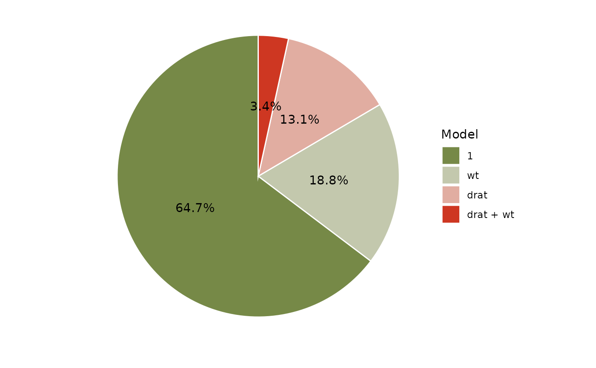
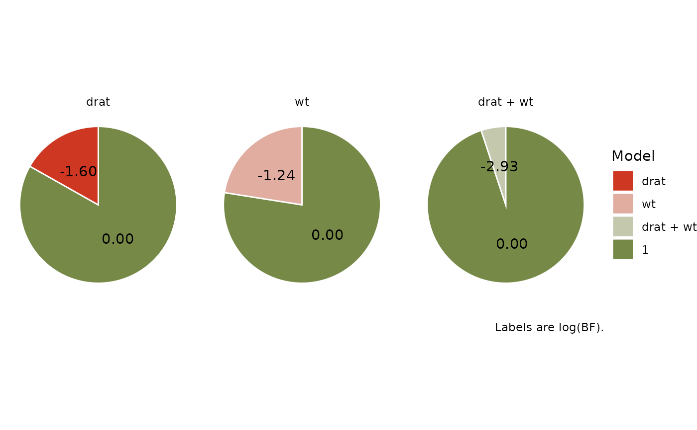

R/plot.bayesfactor_models.R
plot.see_bayesfactor_models.RdThe plot() method for the bayestestR::bayesfactor_models() function.
These plots visualize the posterior probabilities of the compared models.
# S3 method for see_bayesfactor_models plot( x, n_pies = c("one", "many"), value = c("none", "BF", "probability"), sort = FALSE, log = FALSE, prior_odds = NULL, ... )
| x | An object. |
|---|---|
| n_pies | Number of pies. |
| value | What value to display. |
| sort |
|
| log | Show log-transformed Bayes factors. |
| prior_odds | optional vector of prior odds for the models. See
|
| ... | Arguments passed to or from other methods. |
A ggplot2-object.
library(bayestestR) library(see) lm0 <- lm(qsec ~ 1, data = mtcars) lm1 <- lm(qsec ~ drat, data = mtcars) lm2 <- lm(qsec ~ wt, data = mtcars) lm3 <- lm(qsec ~ drat + wt, data = mtcars) result <- bayesfactor_models(lm1, lm2, lm3, denominator = lm0) plot(result, n_pies = "one", value = "probability", sort = TRUE) + scale_fill_pizza(reverse = TRUE)